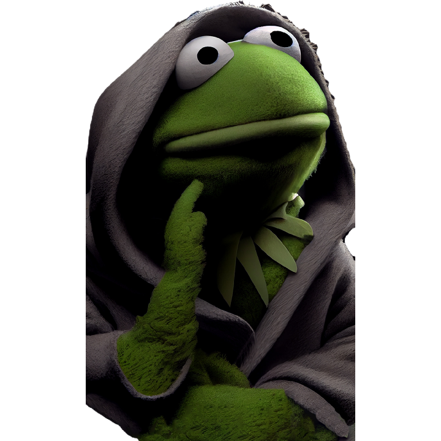

Je suis développeur web et possède une certification CDPI.
J'apprends constamment de nouvelles technologies et je résous des problèmes complexes.
Collaboration
Bienvenue sur mon portfolio ! Je suis un développeur web passionné, spécialisé dans la création de sites web modernes et fonctionnels. Mon objectif est de transformer vos idées en réalité numérique.
Je suis un développeur web passionné, spécialisé dans la création de sites web modernes et fonctionnels. Mon objectif est de transformer vos idées en réalité numérique.